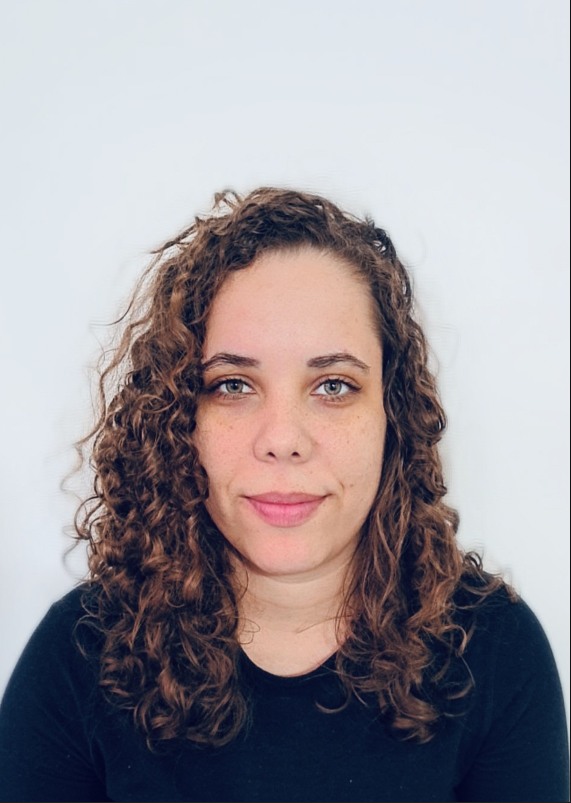
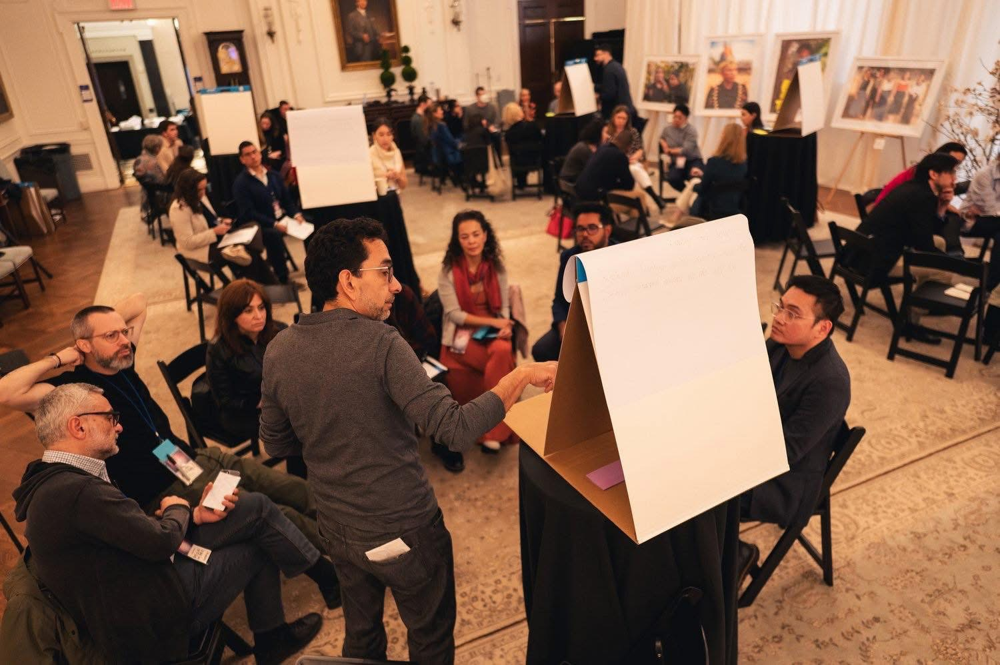
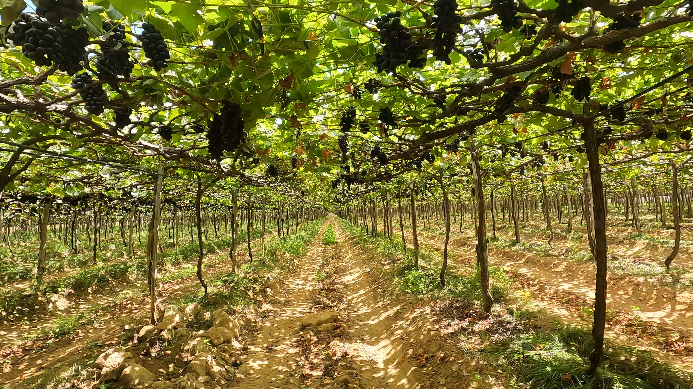
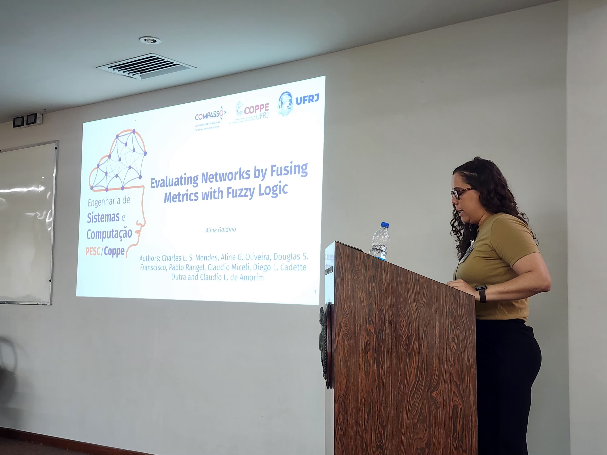

Computer Science researcher at the Systems Engineering and Computer Science Program (UFRJ), specializing in building scalable computational infrastructures for large-scale, data-intensive analysis. I integrate HPC, Cloud, and AI solutions to transform massive, heterogeneous datasets into social and agricultural impact.

Graduate Researcher (MSc Student) working on smart farming technologies, sensor data integration, and computer vision for agricultural monitoring
MSc Researcher working on AI-driven autonomous cloud infrastructures for performance monitoring and resource management in federated IaaS environments for educational platforms
Founder & CEO, leading the development of Natural Language Processing (NLP) systems for large-scale analysis of police violence reports in Rio de Janeiro, supporting data-driven governance accountability

NLP-based platform to map police violence and human rights violations in Rio de Janeiro through large-scale data analysis.
Selected for the NYU Law School FORGE Program • Part of BSc Research
Smart agriculture research integrating sensor data, IoT systems, and computer vision for environmental monitoring.
CNPq Research Project
Research on AI-driven cloud infrastructures and performance monitoring for federated educational platforms.
MSc Research Project • UFRJDevelopment of a pipeline for edge quality classification in mobile ad hoc networks, integrating Graph Neural Networks (GNN) for link prediction and multimodal fuzzy logic fusion of physical metrics and RADNET protocol indicators.
An NLP-based framework designed to automate the classification of human rights violation reports in Rio de Janeiro's favelas. By transforming unstructured testimonials into systemic data, this project leverages AI to challenge official narratives, uncover hidden patterns of state violence, and provide scalable evidence for digital advocacy and legal accountability.
Feel free to reach out for collaborations, research discussions, or opportunities.
For academic inquiries and collaborations.
Send EmailConnect with me professionally.
View LinkedIn